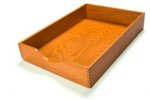

16 août 2007
Hier nous avons vu la situation de départ qui a deux caractéristiques :
- un temps de gestion des mails de l’ordre de 20 minutes par jour, qui n’est pas utilisé pour faire des actions ;
- une Inbox débordante d’actions et d’informations non traitées, qui génère du stress.
Nous résoudrons aujourd’hui le premier point
15 août 2007
En parcourant le net je suis tombé sur une pub pour une boutique de lingerie qui m’a bien fait rire : Boudiche. J’aime cette consonnance parisienne, cette évocation du chic à la française, née de la rencontre improbable des mots « boudin » et « bonniche ».
15 août 2007
- Vous avez plus de 30 dossiers pour ranger vos mails.
- Quand vous avez traité un mail, vous passez plus de 10 secondes à décider dans quel dossier le ranger.
- Vous recevez plus de 50 mails par jour. 200 jours par an.
- Quand vous devez retrouver un mail, ça va plus vite avec un outil de recherche genre Google Desktop (ou Orange Desktop Search).
- Régulièrement, vous devez réorganiser un peu vos dossiers : sujet périmé, nouveau projet, …
- Vous rangez les mails seulement après y avoir répondu ou décidé de ne pas y répondre.
13 août 2007
Toi, lecteur, oui toi là sur ta chaise face au PC, ça me fait plaisir que tu sois là, parce que je vais te livrer le secret du charme. La recette vient de Wisebread, qui nous apprend que les gens charmants :
- Ont une grande qualité d’écoute
- Se souviennent très bien des détails
- Se réjouissent de nos réussites et se montrent concernés par nos problèmes
11 août 2007
S’il vous arrive parfois le soir de vous demander ce que vous avez fait de votre journée, voire de votre semaine, alors ce billet va vous intéresser : 10 easy ways to get the most out of your day
Mes 3 préférés :
- I start out each day by listing the three things I most want to accomplish today — my Most Important Tasks (MITs). And I do my darndest to accomplish them.
- Think about how you can create the best start to your day. Design your morning. And then try to make it a routine. Some ideas could be exercise, eating a healthy breakfast, enjoying the sunrise, doing meditation or prayer, doing some writing, or getting an important task done.
- Make an appointment with yourself.
9 août 2007
Combien faut-il bouger de bâtons (au minimum) pour que cette égalité soit correcte ?
XI + I = X
30 juillet 2007

2007. Le desktop est depuis longtemps devenu une commodity. Google mène la danse pour développer des applications en ligne s’exécutant dans le navigateur indépendamment de l’OS. Dans un monde où le « Software As A Service » n’est plus seulement un buzzword, où les entreprises proposent à leurs clients non plus des produits à faire fonctionner au prix fort, mais des services hébergés exposés sur des API ouvertes, Steve Ballmer, CEO de Microsoft, ex-maître du monde, se résigne : « There is a big disruption going on in our business. And some investors will say it’s scary, it’s this, it’s that, are you going to embrace it? We have no choice. »
28 juillet 2007

Les gourous de la gestion d’information, de Robert Scoble à Merlin Mann, distinguent les filers et les pilers : pour gérer leurs mails les filers ont soixante dossiers, les pilers deux ou trois. L’idée des pilers étant de s’appuyer sur des outils de recherche performants pour retrouver l’info. Je suis devenu un piler après avoir lu cet article et vu cette conférence.
J’ai donc déplacé le contenu de mes 147 dossiers dans 1 seul nommé Archive, et traité mon Inbox jusqu’à 0 avec ces 2 dossiers supplémentaires : Action et Hold.
Pour accélérer le traitement de l’Inbox avec Outlook (2003 et plus), voici comment créer un raccourci clavier pour déplacer les mails sélectionnés dans un répertoire. 5 minutes chrono :
23 juillet 2007
Non, masseur. Vous allez devenir imbattable grâce au cours accéléré (2 minutes) de massage de dos que voici :
http://www.ehow.com/how_4425839_give-yourself-back-massage.html
23 juillet 2007
Trouvé sur Lifehacker, un test bien fichu pour déterminer votre profil d’apprentissage : visuel / auditif / tactile (lien cassé désormais).
Je suis un visuel/non-verbal (score de 38, contre 30 pour visuel/verbal, 30 pour tactile, et 24 pour auditif).
Ce n’est pas un scoop et votre résultat ne devrait pas vous surprendre si vous avez dû pour vos études ou votre job trouver un moyen efficace d’ingurgiter des masses d’informations.
Mais le point intéressant est qu’en fonction de votre profil le site vous propose des techniques pour mieux assimiler ce que vous voulez retenir.